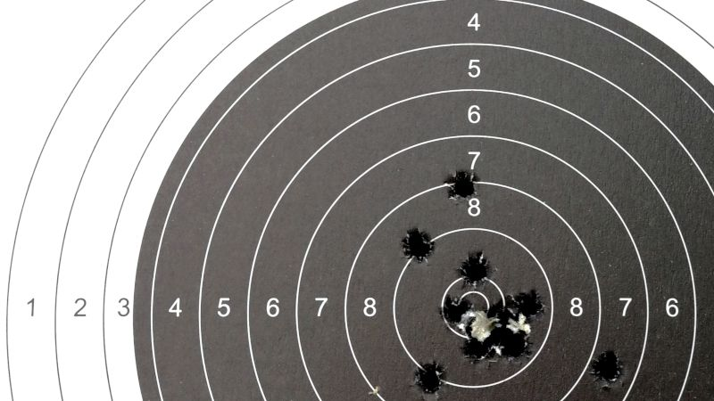

Od zera do rewolwera
O broni palnej, pozwoleniach i strzelectwie – po ludzku i bez zadęcia
Dziesięć kroków do własnej broni palnej
17 lutego 2019, Mikołaj Bartnicki

Tarcza do strzelania z karabinu sportowego
Procedura zdobycia pozwolenia na broń palną to tylko dziesięć prostych kroków do wykonania. Jeśli tylko wytrzymasz pół roku oczekiwania przeplatanego biurokracją, to wymarzona broń będzie twoja!
Przetarty szlak
Opisaną tu drogę do legalnego posiadania własnej broni palnej, przebyło już tysiące polskich strzelców, w tym także ja sam. Wszystkie elementy procedury zostały dobrze przemyślane i wielokrotnie sprawdzone w praktyce, można więc z całą pewnością uznać, że szlak jest przetarty, pewny i bezpieczny. Pozwolenie sportowe, pozwolenie kolekcjonerskie oraz dopuszczenie do posiadania broni – oto zestaw uprawnień jakie zdobędziesz.
Jeśli lista rodzajów broni dostępnej na powyższe uprawnienia wygląda zachęcająco, to wiedz, że wszystkie te strzelające skarby mogą być twoje już za nieco ponad pół roku. Całkowicie legalnie, zgodnie z obowiązującymi przepisami. Bez znajomości w Policji, bez konieczności wręczania łapówek, bez balansowania na granicy prawa, nawet bez nadmiernego kombinowania. Wystarczy trochę wytrwałości. Jak to osiągnąć?
Dziesięć kroków od zera do rewolwera
Przede wszystkim, upewnij się, że spełniasz podstawowe warunki otrzymania pozwolenia na broń. Ogromna większość Polaków je spełnia, więc i ty najprawdopodobniej też. Jeśli tak nie jest, to nie pomogę, bo tych kilku podstawowych (zresztą rozsądnych) ograniczeń nie da się obejść. Wówczas pozostają ci opcje legalnie dostępne bez pozwolenia. Zakładam jednak, że należysz do tej większości, która może dysponować bronią.
Droga od zera do rewolwera składa się z dziesięciu kroków. Jeśli je wykonasz, uzyskasz w efekcie pozwolenie na broń sportową, pozwolenie na broń kolekcjonerską oraz dopuszczenie do posiadania broni. Te uprawnienia pozwolą ci legalnie zrobić wymarzone zakupy w sklepie z bronią. Oto twój plan do wykonania, krok po kroku:
- Wstąp do strzeleckiego klubu sportowego. Członkostwo w takim klubie jest warunkiem koniecznym uzyskania pozwolenia na broń sportową. Dodatkowo, w klubie sportowym wyrobisz sobie patent strzelecki oraz licencję zawodniczą, czyli podstawowe dokumenty strzelca sportowego, które również są wymagane.
- Dołącz do stowarzyszenia kolekcjonerskiego. Przynależność do stowarzyszenia kolekcjonerów broni palnej pozwoli ci wystąpić o pozwolenie na broń kolekcjonerską. Tutaj nie ma już wymogu wyrabiania żadnych specjalnych dokumentów, wystarczy sam fakt, że należysz do odpowiedniego stowarzyszenia.
- Przygotuj się do egzaminu na patent strzelecki. Czeka cię egzamin teoretyczny (przepisy) oraz praktyczny (strzelanie). Będzie on łatwy, pod warunkiem, że uczciwie się do niego przygotujesz. Są na to sprawdzone metody!
- Odwiedź lekarza sportowego. Warunkiem przystąpienia do egzaminu na patent strzelecki są badania medycyny sportowej. Nie ma się czego bać, bo są to proste badania, które nie zabierają dużo czasu i nie kosztują wiele. Czysta formalność.
- Zdaj egzamin na patent strzelecki. Najważniejszy krok ku własnej broni palnej; budzący największe obawy i emocje. Ale nie masz się czego bać, nie święci garnki lepią! Potem będzie już z górki, bo każdy z następnych kroków jest znacznie łatwiejszy i nie tak stresujący.
- Wyrób licencję zawodniczą. Chwila oddechu po egzaminie. Mając patent strzelecki możesz ubiegać się o sportową licencję zawodniczą. To nic trudnego: składasz podanie, wnosisz opłatę i licencja jest twoja. Licencję zawodniczą musisz odnawiać co roku.
- Uzyskaj pozytywną opinię lekarza orzecznika. To drugie spotkanie z medycyną na ścieżce do pozwolenia na broń, tym razem dużo poważniejsze. Przebada cię całe stado specjalistów, z psychiatrą i psychologiem włącznie. Portfel też zaboli, bo badania te nie są tanie.
- Złóż na Policji podanie o wydanie obu pozwoleń i dopuszczenia. Nareszcie! Wnioskuj o pozwolenie na broń sportową, pozwolenie na broń kolekcjonerską oraz dopuszczenie do posiadania broni. I przygotuj się na miesięczną szkołę cierpliwości, bo tyle właśnie czasu ma Komendant na wydanie decyzji.
- Przyjmij wizytę dzielnicowego. W czasie gdy tryby aparatu policyjnego mielą twoje podanie, wpadnie do ciebie twój dzielnicowy. Celem jego wizyty jest sprawdzenie, czy przypadkiem nie jesteś jakimś podejrzanym typem, który nie powinien mieć broni.
- Kup sejf na broń. W Polsce broń palną należy przechowywać w odpowiednim sejfie. Zatem skoro chcesz mieć broń, to musisz najpierw postawić sobie w domu taki sejf. Wbrew powszechnej opinii, nie musi być on przymocowany do podłoża. Cena sejfu zależy od jego wielkości oraz rodzaju zamka.
Każdemu z kroków poświęciłem osobny artykuł opisujący w szczegółach co i jak, powołując się na moje własne doświadczenie w tej materii. Przypominam, że z tej procedury skorzystało już tysiące polskich posiadaczy broni. Nie mówimy więc o eksperymentach, próbach i przypuszczeniach, lecz o metodzie wielokrotnie sprawdzonej w praktyce.
Ile to wszystko kosztuje?
Cała procedura zajmie ci jakieś pół roku i będzie kosztować około dwóch tysięcy złotych. Zatem to klasyczne porównanie do wyrobienia prawa jazdy jest jak najbardziej na miejscu.
Dokładny czas niezbędny do zdobycia pozwolenia może się różnić i trochę zależy od szczęścia. Nie masz wpływu na terminy egzaminów, dostępność lekarzy czy na czas wyrabiania różnych dokumentów jakie będą ci potrzebne. Czysto teoretycznie, całość można załatwić w cztery miesiące, ale w naszej biurokratycznej rzeczywistości to zdecydowanie nierealne. W moim przypadku, od podjęcia decyzji że chcę mieć własny rewolwer, do otrzymania pozwolenia na broń, minęło siedem miesięcy. Zatem pół roku to rozsądne minimum, z jakim musisz się liczyć.
Dwa tysiące złotych to zgrubne oszacowanie. Na ostateczną kwotę wpływ mają opłaty klubowe i koszty wizyt lekarskich; w sumie można tutaj oszczędzić lub dopłacić nawet kilkaset złotych. Niestety za te pieniądze nie dostaniesz nic namacalnego. To są wydatki na wpisowe, składki, badania lekarskie, opłaty administracyjne itp. Ot, takie myto, jakie musi uiścić każdy przyszły posiadacz broni palnej. Na szczęście nie trzeba wykładać na stół całej kwoty na raz; wydatek ten jest rozłożony w czasie, wiec nie bije za mocno po kieszeni.
Ostatnim kosztem, który prawie zawsze jest niesłusznie pomijany, będzie zakup sejfu na broń. Ceny najprostszych małych sejfów zaczynają się już od kilkuset złotych. Ale typowy sejf na broń kosztuje, zależnie od rodzaju zamka i od wielkości, w granicach od tysiąca do dwóch tysięcy złotych.
Dalej, jazda do roboty!
Teraz, skoro znasz już plan postępowania, to czas zacząć działać. Jeśli poważnie potraktujesz temat, to pozwolenie na broń będziesz miał, to tylko kwestia czasu. Oczekiwanie możesz spożytkować na zapoznanie się z ofertą sklepów z bronią i zaplanowanie pierwszych zakupów. Nie zwlekaj z decyzją, każda podróż zaczyna się od pierwszego kroku!
Jeśli jednak z jakiegokolwiek powodu nie możesz lub nie chcesz starać się o pozwolenie na broń, to jeszcze nic straconego. Brak pozwolenia na broń wcale nie zamyka drzwi do strzelectwa, co wykażę w następnym artykule. Potem przejdziemy od konkretów odnośnie każdego z kroków do uzyskania pozwolenia na broń.